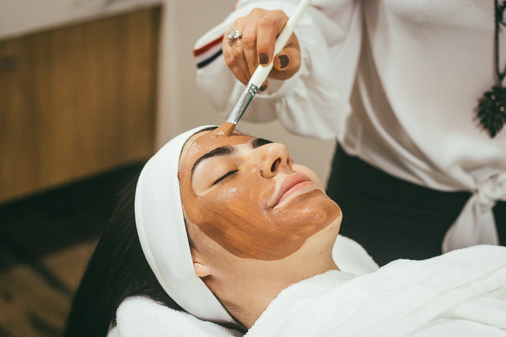

Manchester treatment guides
Cosmetic treatments in Manchester.
Plain-English introductions to popular cosmetic treatments, their limitations, recovery and risks. A consultation with an appropriately qualified provider is essential before any treatment.

Injectable treatments
Non-surgical does not mean risk-free. Ask who will prescribe or inject, what product is used and what happens if complications arise.
Lip fillers
Hyaluronic acid filler for shape, volume or symmetry.
→02Anti-wrinkle injections
Prescription treatment for selected expression lines.
→03Dermal fillers
Volume and contour for cheeks, chin, jaw and other areas.
→Face and nose surgery
Operations require careful assessment, time to decide and a clear plan for anaesthesia, recovery and complications.
Rhinoplasty
Surgery intended to alter nasal form, function or both.
→05Facelift
Surgical treatment of selected age-related facial changes.
→06Eyelid surgery
Upper and lower blepharoplasty considerations.
→Breast and body surgery
Explore the trade-offs between desired contour, scars, recovery, future changes and ongoing follow-up.
Breast augmentation
Implant and fat-transfer considerations.
→08Breast reduction
Size, proportion, scars and functional goals.
→09Liposuction
Targeted fat removal and body contouring.
→10Tummy tuck
Abdominoplasty for selected excess skin and abdominal concerns.
→Hair and skin
Device, diagnosis and operator matter. Compare the proposed plan rather than relying on a treatment label.
Hair transplant
FUE, FUT, donor supply and future hair loss.
→12Laser skin resurfacing
Texture, scars, pigmentation and downtime.
→Medical weight management
Clinician-led assessment, monitoring and long-term support. Prescription treatment is never guaranteed.
Weight loss clinic options
Clinician-led assessment, support and factual information about prescription treatment options.
→More face and body surgery
Popular UK procedures with plain-English information about scars, recovery, risk and typical Manchester private costs.
Breast uplift
Mastopexy, scar patterns and implant decisions.
→15Mummy makeover
Combined breast and abdominal surgery planning.
→16Gynaecomastia surgery
Male breast reduction, gland excision and liposuction.
→17Brazilian butt lift
Gluteal fat grafting and its exceptional safety risks.
→18Otoplasty
Ear correction, cartilage reshaping and scars.
→19Neck lift
Skin, muscle and fat considerations.
→20Brow lift
Brow position, hairline and surgical techniques.
→21Arm lift
Brachioplasty scars and post-weight-loss contouring.
→22Thigh lift
Skin removal, scar placement and recovery.
→23Labiaplasty
Neutral adult information about intimate surgery.
→More non-surgical, hair and skin treatments
Compare exact products, devices, operators, likely courses and limitations—not just treatment names.
Profhilo and skin boosters
Injectable hydration treatments and course planning.
→25Microneedling
Standard and radiofrequency treatment differences.
→26Chemical peels
Peel depth, downtime and pigment considerations.
→27Laser hair removal
Devices, skin tone, patch testing and courses.
→28Thread lift
Temporary lifting, limitations and complications.
→29PRP hair treatment
Diagnosis, evidence and multi-session courses.
→30Fat freezing
Cryolipolysis, applicator costs and rare complications.
→31HIFU skin tightening
Device quality, realistic lifting and nerve risks.
→32Acne scar treatment
Laser, microneedling, subcision and combination plans.
→33HydraFacial
Branded facial steps, boosters and temporary results.
→34PRP facial
Blood processing, microneedling combinations and evidence.
→Unsure where to begin?
Talk through your enquiry.
We can explain the introduction process, but only a suitable healthcare professional can assess you or recommend treatment.